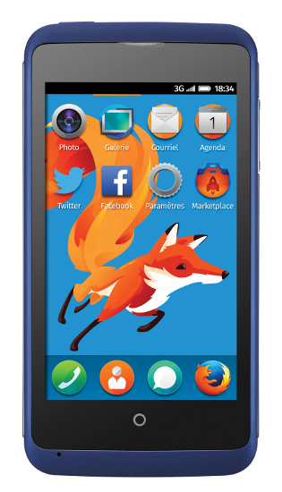
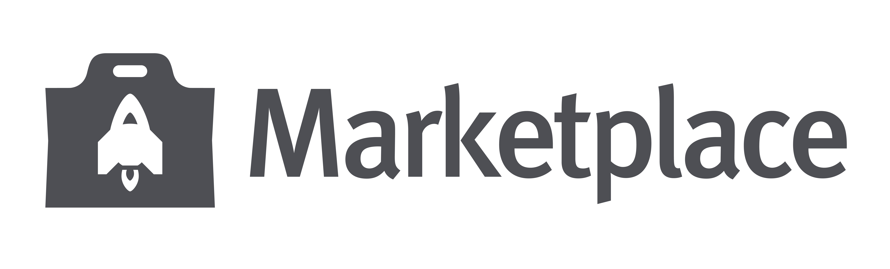

REGARDEZ L'AVENIR
REGARDEZ L'AVENIR
-

ZTE OPEN C
acheter
-
Privacy => do not track
-
AIDE

AIDE
lien vers l'aide +faq
-
Trouver des apps
marketplace
allez sur le marketplace
-
Build an app
in seconds appmaker -
lien vers RS ?
-
RSS BLOG
-
twitts qui defile
Merch with a mission.
Products with a purpose.
Goods that do good.Get your Mozilla gear